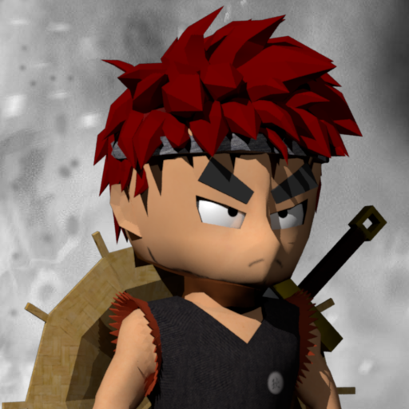

struct ViewParams { scale: f32, }; struct MassSize { mass: f32, size: f32, }; struct VertexOutput { @builtin(position) Position : vec4<f32>; @location(0) fragUV : vec2<f32>; }; @binding(0) @group(0) var currentSampler: sampler; @binding(1) @group(0) var currentTexture: texture_2d<f32>; @binding(0) @group(1) var<uniform> viewParams : ViewParams; @stage(vertex) fn vert_main( @location(0) a_force : vec3<f32>, @location(1) a_position : vec3<f32>, @location(2) a_velocity : vec3<f32>, @location(3) a_mass_size : vec2<f32>, @location(4) a_vert_pos : vec3<f32>, @location(5) a_vert_uv : vec2<f32>) -> VertexOutput { var scale = viewParams.scale; var output : VertexOutput; output.Position = vec4<f32>((a_position + a_vert_pos * a_mass_size.y) * scale, 1.0); output.fragUV = a_vert_uv; return output; } @stage(fragment) fn frag_main(@location(0) fragUV: vec2<f32>) -> @location(0) vec4<f32> { let texColor = textureSample(currentTexture, currentSampler, fragUV * 0.8 + vec2<f32>(0.1, 0.1)); return vec4<f32>(texColor.r, texColor.g, texColor.b, 1.0); }
struct MassSize { mass: f32, size: f32, }; struct Instance { @size(16) force: vec3<f32>, @size(16) position : vec3<f32>, @size(16) velocity : vec3<f32>, @size(16) mass_size: MassSize, }; struct Instances { instances : array<Instance>, }; @binding(0) @group(0) var<storage, read> instancesIn : Instances; @binding(1) @group(0) var<storage, read_write> instancesOut : Instances; @stage(compute) @workgroup_size(64) fn main(@builtin(global_invocation_id) GlobalInvocationID : vec3<u32>) { var index : u32 = GlobalInvocationID.x; var time = params.time; var count : u32 = arrayLength(&instancesIn.instances); // Read var vPos = instancesIn.instances[index].position; var vVel = instancesIn.instances[index].velocity; // Write back instancesOut.instances[index].position = vPos + vec3<f32>(0.001, 0.001, 0.0); }
struct SimParams { time: f32, }; struct MassSize { mass: f32, size: f32, debug1: f32, debug2: f32 }; struct Instance { @size(16) force: vec3<f32>, @size(16) position : vec3<f32>, @size(16) velocity : vec3<f32>, @size(16) mass_size: MassSize, }; struct Instances { instances : array<Instance>, }; @binding(0) @group(0) var<storage, read> instancesIn : Instances; @binding(1) @group(0) var<storage, read_write> instancesOut : Instances; @binding(0) @group(1) var<uniform> params : SimParams; @stage(compute) @workgroup_size(64) fn main(@builtin(global_invocation_id) GlobalInvocationID : vec3<u32>) { var G = 6.67408313131E-11; var time = params.time; var count : u32 = arrayLength(&instancesIn.instances); var threadIndex = GlobalInvocationID.x; if (threadIndex >= count) { return; } var first = instancesIn.instances[threadIndex]; var m1 = first.mass_size.mass; if (m1 <= 0.0) { // no calculation required // clone data, otherwise record in second buffer becomes dity (has stail values) instancesOut.instances[threadIndex] = first; return; } var forceVector = vec3<f32>(0.0, 0.0, 0.0); // calculate result force on all objects/planets for (var j : u32 = 0u; j < count; j=j+1u) { if (threadIndex == j) { continue; } var second = instancesIn.instances[j]; var m2 = second.mass_size.mass; if (m2 <= 0.0) { // skip no mass object continue; } var dist = distance(first.position, second.position); var distanceSquared = dist * dist; if (distanceSquared > 0.0) { var force = G * m1 * m2 / distanceSquared; var directionVector = normalize((second.position - first.position)); forceVector = forceVector + (directionVector * force); } } // calculate new position depends on force var a = forceVector / m1; var v = a * time; var s = v * time / 2.0; var newPosition = first.position + (first.velocity * time) + s; instancesOut.instances[threadIndex].force = forceVector; instancesOut.instances[threadIndex].mass_size = first.mass_size; instancesOut.instances[threadIndex].mass_size.mass = m1; instancesOut.instances[threadIndex].position = newPosition; instancesOut.instances[threadIndex].velocity = first.velocity + v; // calculate collisions for(var j : u32 = 0u; j < count; j=j+1u) { if (threadIndex == j) { continue; } var second = instancesIn.instances[j]; var m2 = second.mass_size.mass; if (m2 <= 0.0) { // skip no mass object continue; } // calculate collision var b = distance(first.position, second.position); var c = distance(newPosition, second.position); var radius = (first.mass_size.size + second.mass_size.size) / 2.0; var id1 = threadIndex; //first.id; var id2 = j; //second.id; if (b < radius || c < radius) { if (m1 > m2 || (m1 == m2 && id1 > id2)) { // fix speed v = (m1v1 + m2v2) / (m1 + m2) var v1 = first.velocity; var v2 = second.velocity; var vresult = (v1 * m1 + v2 * m2) / (m1 + m2); var s1 = first.mass_size.size; var s2 = second.mass_size.size; var newR = pow((s1 * s1 * s1 + s2 * s2 * s2), 1.0 / 3.0); // mark collision instancesOut.instances[threadIndex].velocity = vresult; instancesOut.instances[threadIndex].mass_size.mass = m1 + m2; instancesOut.instances[threadIndex].mass_size.size = newR; instancesOut.instances[threadIndex].mass_size.debug1 = -1.0; instancesOut.instances[threadIndex].mass_size.debug2 = f32(j); } else { // collision from other side instancesOut.instances[threadIndex].mass_size.mass = 0.0; instancesOut.instances[threadIndex].mass_size.size = 0.0; instancesOut.instances[threadIndex].velocity = vec3<f32>(0.0, 0.0, 0.0); instancesOut.instances[threadIndex].force = vec3<f32>(0.0, 0.0, 0.0); instancesOut.instances[threadIndex].mass_size.debug1 = -3.0; instancesOut.instances[threadIndex].mass_size.debug2 = f32(j); } // no more calculations after collision break; } } }
